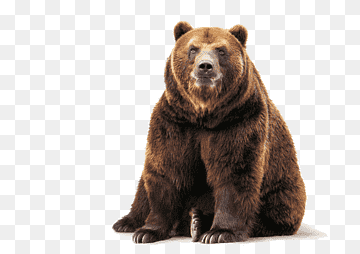
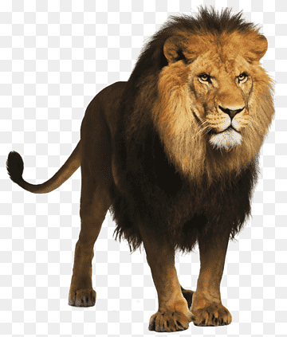
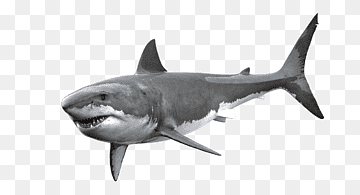

Bear |
Lion |
Shark |
|---|---|---|
|

The bear is a large, strong mammal that lives in various parts of the world. It is characterized by its thick fur and its ability to hibernate in winter.
|

The lion is known as the king of the jungle. It is a carnivorous feline that lives in packs and is found mainly in Africa.
|

The shark is a marine predator with a keen sense of smell. There are many species, some reaching large sizes.
|